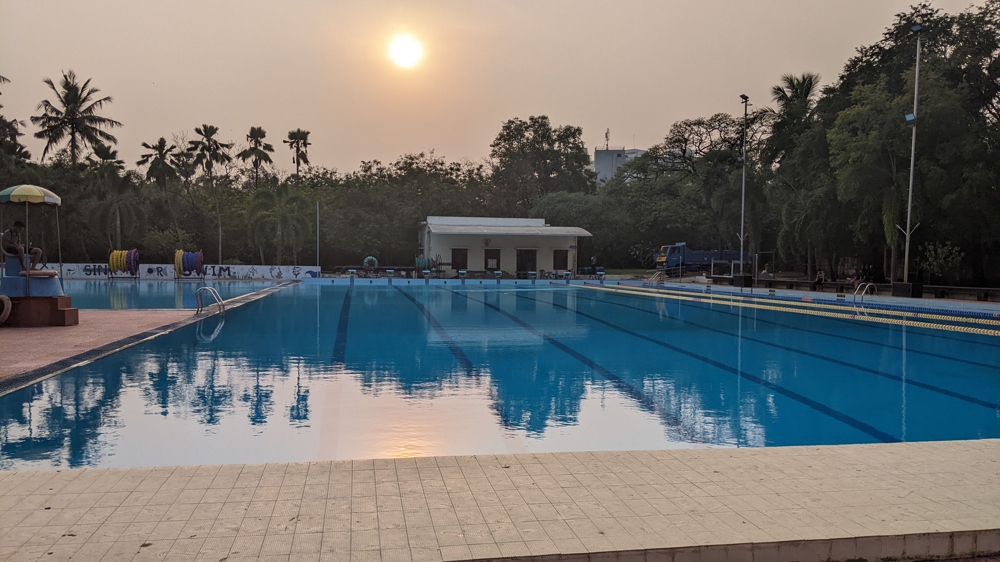
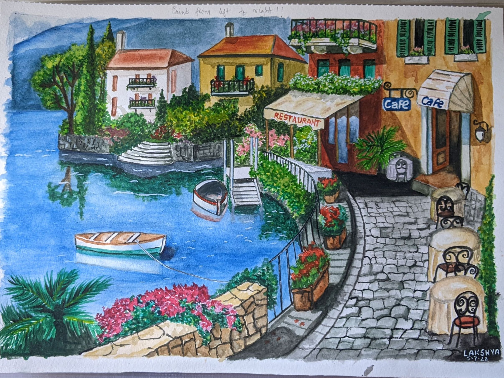

MISCELLANEOUS
IIT Madras
CLIC Mentee
I had the wonderful opportunity of being mentored by Mr. Vasu Adunutula as a part of the CLIC Mentee cohort for the year 2022. This was a semester long process of monthly meetings of discussions and learnings. I learnt a lot about myself throughout the process and encourage anyone who would have the chance of being mentored by a senior, alumnus or not, to go for it.
Sports
I was a part of NSO (National Sports Organization) Athletics in my first year of college. We had practice sessions thrice weekly and I enjoyed sweating it out at Watsa after a day of classes and labs. After the pandemic I started attending regualr swimming practice sessions with the aquatics team. As a sport, I think swimming is highly underestimated as it can totally wipe you out. I would be so tired after my sessions, but it is always the good kind of tired, and you will most definitely get the best sleep you ever will. I am very proud of the fact that I regularly swam 2 kilometres, which is quite a lot. Swimming really helped improve my endurance.

Hobbies
Painting
I have been learning how to paint since the age of 5. I am a creative person by nature, and I try to paint at least one picture every year. This year, as my internship was online, I spent some time painting a scene of a cafe next to a lake in a Parisian Street setting. I am not a "come up with my own idea" person. I search for inspiration on the internet, and when I find some image intriguing, I go ahead and paint it. I am comfortable in using colour pencils, poster paints, pencil shading, charcoal, chalk and oil pastels. However, my favourite medium is water painting and most of my recent works are water color based paintings.


Guitar
I always thought people who play the guitar are extremely cool - Taylor Swift and Shawn Mendes (back then not anymore :/). And when I was done with my JEE Exams, the first thing I asked for from my parents was a guitar. I enrolled for a class for two months (three actually, but we'll let that slide since I had to go to college) but didn't learn much. That was 2019. Guess what happened next year? I was back home. For a long time. It wasn't short of a pandemonium, I would say. Anyway, I started practicing religiously throughout the pandemic. It was my selfish but well-deserved get away. I should be thankful my parents did not find my guitar playing too annoying when I was just a beginner. With practice I only got better, and now I enjoy playing songs I like and singing along. It's a cool party trick too because not a lot of people expect you to know an instrument. My dream is to learn to play the bass and drums, I'll figure that out along the way. Watch me SING!
Carnatic Music
I am a Junior Exam Certified Carnatic Music singer, and I'll have to give my mom most of the credit since she was the one who motivated me to attend classes and learn Carnatic music. I did not appreciate Carnatic Music as much before, but now I can see how it has helped in improving my singing abilities and making my voice stronger on the whole. I do not sing Carnatic Music that often, however when I do find the chance I participate in events.
Reading
I am an avid reader. From Enid Blyton to Suzanne Collins and J.K. Rowling I have read them all. Hunger Games is still my top favourite book. Recently I have grown a liking towards Sarah J. Mass' fanatsy novel series and other historical fiction books like The Seven Husbands of Evelyn Hugo. I try reading self help books from time to time but I find them too preachy. Sometimes I think it is better to figure out stuff on my own.